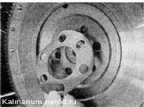
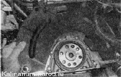
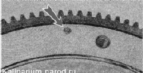

Маховик - снятие и установкаСнятие 1. Снимаем нажимной и ведомый диски сцепления. 2. Любым доступным способом помечаем положение маховика на валу (это упростит установку). 3. Торцовым ключом на 17 мм отворачиваем шесть болтов крепления маховика, удерживая его от проворачивания монтажной лопаткой или отверткой. 4. Снимаем шайбу и маховик. При необходимости снимаем с направляющих втулок верхнюю крышку картера сцепления.  Установка Устанавливаем маховик в обратной последовательности в соответствии с меткой, сделанной при разборке. Перед заворачиванием болтов крепления маховика нанесите на их резьбовую часть фиксатор резьбы. Маховик должен быть установлен на коленчатый вал только в одном положении. Если сделанная метка стерлась, маховик можно установить на вал по заводской метке - для этого на наружной стороне маховика высверлена лунка. При установке маховика на коленчатый вал, метка должна располагаться напротив шатунной шейки четвертого цилиндра. Не перепутайте метку с балансировочными лунками, которые сделаны сверлом большего диаметра.  |